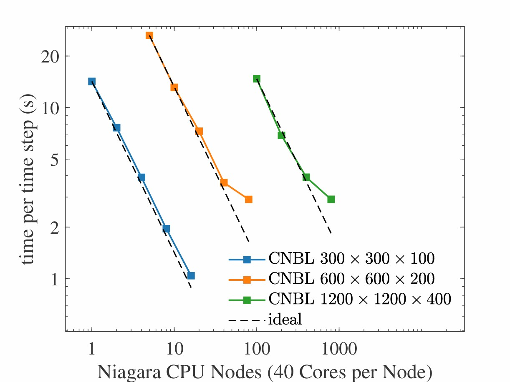

Parallel Efficiency
TOSCA is built on state-of-the-art parallel libraries (OpenMPI, PETSc, HYPRE, HDF5), thus it is suitable by construction for massively parallel wind farm simulations. All primary field operations — flow solver kernels, Poisson solver, actuator model updates, and I/O — are parallelized and distributed across MPI processes.
The computational domain is decomposed into a structured rectilinear partition of subdomains, one per MPI process. The PETSc DMDA framework manages the inter-process halo exchange (intra-processor ghost-cell updates) needed by the finite-difference stencils. All global reductions (e.g. computation of pressure mean, controller error averages, Lagrangian model denominators) use MPI collective operations, optimized where possible.
Wind turbine updates and parallelization are original of the TOSCA code and no external library is used. Each turbine is associated with a sphere of mesh cells enclosing the full rotor sweep during an hypothetical 360 deg yaw. Processors owning cells inside this sphere are grouped into turbine-specific sub-communicators. This design ensures that, provided a sufficient core count, all turbines are solved simultaneously and the turbine update time is independent of the total wind farm size. Notably, each communicator writes its turbine output files concurrently, eliminating the I/O bottleneck that would arise if all turbine output had to be written by a single process. When coupled with OpenFAST, it is the master processor of each turbine communicator to handle the OpenFAST solution, so that multiple instances of OpenFAST can be solved in parallel across the cluster.
TOSCA’s parallel efficiency was assessed on Compute Canada’s Niagara cluster (2024 nodes, 40 Intel Skylake/Cascade Lake cores each, EDR Infiniband in a Dragonfly+ topology) in 2024, using three conventionally-neutral boundary layer (CNBL) meshes of 9M, 72M, and 576M cells obtained by sistematically doubling the cell count in each direction. The time per iteration remains close to linear in the number of nodes down to approximately 25000 cells per core, which is identified as a practical efficiency threshold. TOSCA has been successfully run at full machine scale (all 2024 Niagara nodes, exceeding 1 billion mesh elements) to demonstrate its capability for massively parallel computations.
{kind=link}

Strong-scaling efficiency on the Niagara cluster (Compute Canada) for three CNBL meshes: 9M, 72M, and 576M cells. The dashed line shows ideal linear scaling. Efficiency remains close to 1 down to approximately 25000 cells per core.